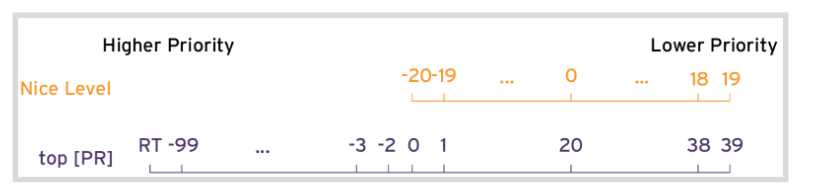
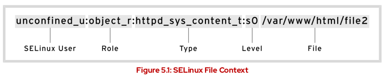
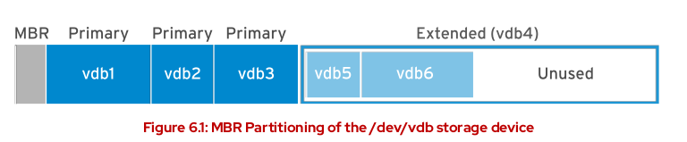
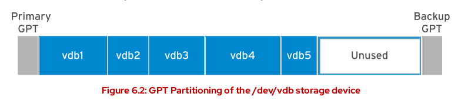
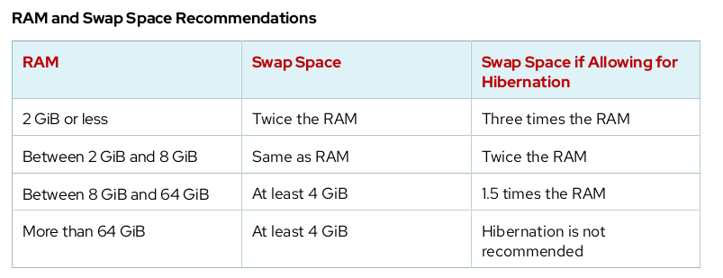
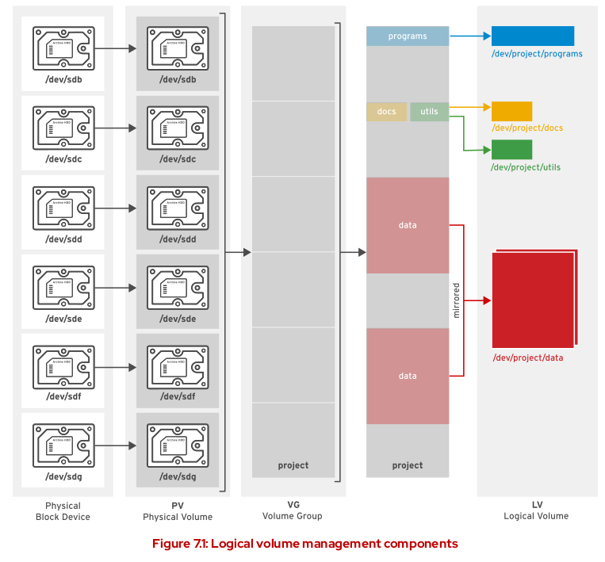
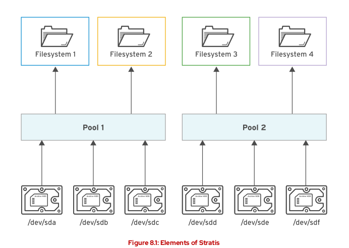
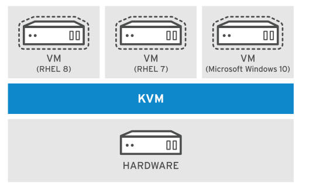
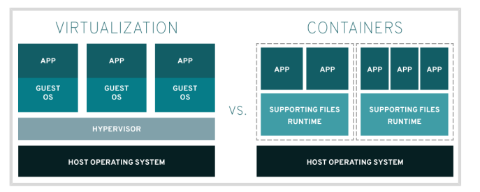

Server Administrator II - RH134
Improving Command Line Productivity
Writing Simple Bash Scripts
The Bash interpreter start in the first line of script with #! /bin/bash and to run the script we need :
Config the execute permission on script
Have the script on
$HOME/binand call the script name or any other bin path inside your$PATH
LOOPS
Syntax of bash for loop
for <VARIABLE> in <LIST>; do
<COMMAND> <VARIABLE>
doneSample:
#1
for HOST in host1 host2 host3; do echo $HOST; done
#2
for HOST in host{1,2,3}; do echo $HOST; done
#3
for HOST in host{1..3}; do echo $HOST; done
#4
for FILE in file* ; do ls $FILE; done
#5
for FILE in file{a..c}; do ls $FILE; done
#6
for PACKAGE in $(rpm -qa | grep kernel); \
do echo "$PACKAGE was installed on \
$(date -d @$(rpm -q -qqf "%{INSTALLTIME} \n" $PACKAGE))"; done
Sequence
Sample :
#1
seq 2 2 10
output
2
4
6
8
10
#2
for EVEN in $(seq 2 2 10); do "$EVEN";doneExit Codes
0 : successfully
0 : not successfully
0 to 255 : range
To display the exit code
echo $?IF / THEN
#1
if <condition>; then
<STATEMENT>
...
<STATEMENT>
else
<STATEMENT>
...
<STATEMENT>
fi
#2
if <condition>; then
<STATEMENT>
...
<STATEMENT>
elif <condition>; then
<STATEMENT>
...
<STATEMENT>
else
<STATEMENT>
fi
Sample
systemctl is-active psacct > /dev/null 2>&1
if [ $? -ne 0 ] ; then
sudo systemctl start psacct
else
sudo systemctl stop psacct
fiRegex to match text in command outputs
Regex can be used with command as vim, grep and less
There are several options below some samples :
- Show me lines that starts with cat using
^
grep '^cat' <FILE>- Show me lines that ends with cat using
$
grep 'cat$' <FILE>- Show me lines that start and end with cat using
^and$
grep '^cat$' <FILE>- Whildcard for any character c.t
grep '^c.t$' <FILE>
Output
cat
cit
cot
cpt
cst
- Show me lines with one character of list in [xxx]
grep '^c[aou]t$' <FILE>
output
cat
cot
cut- Show me lines with c +
<characters>+ t
grep 'c.*t' <FILE>
output
cat
zuchetto
zymochemistry
- Show me lines with c +
<2 characters>+ t
Simple way ‘c..t’ but we can use modifiers :
grep 'c.\{2\}t' <FILE>
#output
Yacolt
Zacynthus
zoocultural- Show me lines that starts with c +
<starts with 2 up to 3 characters>+ t
grep 'c.\{2,3\}t' <FILE>
#output
zirconate
zoophysicist
zuchetto
zygocactus
zoocyst
grep Options
-icase insensitivity-vinvert the search-Esearch for ln and nx in particular filegrep -E 'ln|nx file'Do not show lines that starts with #
^#or blank lines^$
grep -vE '^#|^$' file- Do not show lines that starts with # or ;
grep -v '^[#;]' fileScheduling Future Tasks
One time Job : at command
atTIMESPEC command to schedule a new job Samplesat now + 5minat teatime tomorrow(teatime is 16:00)at noon + 4 daysat 5pm august 3 2021
-gspecify a queue g , queue goes a to z
*atq to check the jobs schedules on my queue
- To inspect all info about job
at -c <job number>- To remove a job
atrm <job number> - To monitor a job or queue
watch atqRecurring Jobs cron command
USER
Basic commands :
crontab -l: list the jobs for the current usercrontab -r: Remove all jobs from current usercrontab -e: Edit jobscrontab <filename>: Remove all jobs and replace with the job read from filename, if no file is specified stdin is used
Once the job is schedule will have a file on /var/spool/cron/
To check the structure of contrab schedule we can check the file /etc/crontab
cat /etc/crontab
#output
SHELL=/bin/sh
PATH=/usr/local/sbin:/usr/local/bin:/sbin:/bin:/usr/sbin:/usr/bin
# Example of job definition:
# .---------------- minute (0 - 59)
# | .------------- hour (0 - 23)
# | | .---------- day of month (1 - 31)
# | | | .------- month (1 - 12) OR jan,feb,mar,apr ...
# | | | | .---- day of week (0 - 6) (Sunday=0 or 7) OR sun,mon,tue,wed,thu,fri,sat
# | | | | |
# * * * * * user-name command to be executed
- Other options
# every 5min
*/5 * * * * <xxx>
# every 5min, between 9am and 5pm Sun and Wed in July
*/5 9-16 * Jul sun, wed
- Logs : Can check the cron jobs logs on /var/log/cron
SYSTEM cron jobs
There are some ways to have a system cron jobs
- /etc/crontab
- Simple add the job on file
- /etc/cron.d/
- Add a file with job schedule on this path
- /etc/cron/
- run the command to check
ls /etc/cron\.*we can have folders with cron job files or scripts
- run the command to check
The backup mechanism of cron files is anacron and it is configured on /etc/anacrontab and the purpose is make sure that all important jobs always run
- There are different files on /var/spool/anacron for each daily, weekly and monthly jobs with timestamps based on schedule if there were a job that should be perform and machine is offline the job will be triggered
Systemd Timer Unit
This is a new scheduling function introduced on RHEL7, sample :
The sysstat package provides a systemd timer unit called sysstat-collect.timer to collect system statistics every 10 minutes. The following output shows the configuration lines of /usr/lib/systemd/system/sysstat-collect.timer.
...output omitted...
[Unit]
Description=Run system activity accounting tool every 10 minutes
[Timer]
OnCalendar=*:00/10
[Install]
WantedBy=sysstat.service- To check the timers on system
systemctl --type timerIf need to modify we can do on /etc/systemd/system and after change the timer unit config files need to reload the daemon and activate the timer unit
# Reload
systemctl daemon-reload
# Activate
systemctl enable --now <unitname>.timr
Managing Temporary Files
We can configure timers that manages temporary files.
- Some applications use /tmp to hold temp data
- Others use use specific locations such as daemon and user-specific volatile dirs under /run, when system reboot those volatile store will be gone.
The tool systemd-tmpfiles provide structured and configurable method to manage temp dirs and files
When systemd starts a system, one of the first service units launched is systemd-tmpfiles-setup. This service runs the command
systemd-tmpfiles --create --removeThis command reads configuration files from :
- /usr/lib/tmpfiles.d/*.conf,
- /run/tmpfiles.d/*.conf, and
- /etc/tmpfiles.d/*.conf.
Any files and directories marked for deletion in those configuration files is removed, and any files and directories marked for creation (or permission fixes) will be created with the correct permissions if necessary.
- Cleaning Temporary Files with a Systemd Timer
The systemd timer unit called systemd-tmpfiles-clean.timer triggered systemd-tmpfiles-clean.service on regular interval, which executes the command to clean
systemd-tmpfiles --cleanTo view the contents of the systemd-tmpfiles-clean.timer config files:
systemctl cat systemd-tmpfiles-clean.timerIf need to check the parameter frequence of clean up we need to make sure to reload and enable the timer
systemctl daemon-reload
systemctl enable --now systemd-tmpfiles.clean.timer- Cleaning Temporary Files Manually
Command :
systemd-tmpfiles --cleanthis command wll purge all files which have not been accessed, changed, or modified more recently than max age defined on config file
The format of config file systemd-tmpfiles is detailed in the tmpfiles.d manual page
Sample:
create the /run/systemd/seats directory if it does not yet exist, owned by the user root and the group root, with permissions set to rwxr-xr-x. This directory will not be automatically purged.
#Type, Path, Mode, UID, GID, Age, and Argument
d /run/systemd/seats 0755 root root -
Create the /home/student directory if it does not yet exist. If it does exist, empty it of all contents. When systemd-tmpfiles –clean is run, remove all files which have not been accessed, changed, or modified in more than one day.
#Type, Path, Mode, UID, GID, Age, and Argument
D /home/student 0700 student student 1dCreate the symbolic link /run/fstablink pointing to /etc/fstab. #Never automatically purge this line.
#Type, Path, Mode, UID, GID, Age, and Argument
L /run/fstablink - root root - /etc/fstab- Configuration File Precedence
The config file can exists in three places:
- /etc/tmpfiles.d/*.conf
- provided by the relevant RPM packages, should not edit
- /run/tmpfiles.d/*.conf
- volatile files, used by daemons
- /usr/lib/tmpfiles.d/*.conf
Tuning System Performance
tuned daemon allow us optmize system performance by selection a tunning profile
- To install and enable tuned
yum install tuned
systemctl enable --now tunedProfiles
balanced : Ideal for systems that require a compromise between power saving and performance.
desktop : Derived from the balanced profile. Provides faster response of interactive applications.
throughput-performance : Tunes the system for maximum throughput.
latency-performance : Ideal for server systems that require low latency at the expense of power consumption.
network-latency : Derived from the latency-performance profile. It enables additional network tuning parameters to provide low network latency.
network-throughput : Derived from the throughput-performance profile. Additional network tuning parameters are applied for maximum network throughput.
powersave : Tunes the system for maximum power saving.
oracle : Optimized for Oracle database loads based on the throughput-performance profile.
virtual-guest : Tunes the system for maximum performance if it runs on a virtual machine.
virtual-host : Tunes the system for maximum performance if it acts as a host for virtual machines
Managing profiles from command line
- To active
tuned-adm active- To List all available profiles
tuned-adm list- To switch the active profile to a different one
tuned-adm profile <profile_name>
tuned-adm active- To have a recommendation of profile
tuned-adm recommened- To deactivate
tuned-adm off
tuned-adm activeInfluencing Process Scheduling
Prioritize or de-prioritize specific process with nice and renice
- Nice values
- 19 : Nicest (lowest priority)
- 0 : Neutral
- -20: Least nice (highest priority)
- Display Nice Levels from the command line
ps axo pid, comm, nice, cls --sort=-nice- Start process with different Nice levels
# default nice is 10
nice sha1sum /dev/zero &
# setting to 15
nice -n 15 sha1sum &- Change the Nice level of existing process
renice -n <level> <process number>Controling Access to Files with ACLs
ACLs Access Control List are extention of permissions
- To check if file have ACL we going to see a
+on long list ouput
-rwxrw----+ 1 user operators 130 Mar 19 23:56 reports.txt- The group permission on
ls -lis masked, will not be the real permission of this file need to check ACL settings
Changing group permissions on a file with an ACL by using chmod does not change the group owner permissions, but does change the ACL mask. Use setfacl -m g::perms file if the intent is to update the file’s group owner permissions.
- View File or Directory ACLs using getfacl
command
[user@host content]$ getfacl reports.txt
# file: reports.txt
# owner: user
# group: operators
user::rwx
user:consultant3:---
user:1005:rwx #effective:rw-
group::rwx #effective:rw-
group:consultant1:r--
group:2210:rwx #effective:rw-
mask::rw-
other::---- The ACL MASK
Defines the maximum permissions that you can grant. It does not restrict permissions of the file owner or other user. all files and directories that implement ACL will have an ACL mask.
By default , the mask is recalculated whenever any of the affected ACLs are added, modified or deleted
- Changing ACL file permissions setfacl
$ setfacl -m u:name:rX file-m: modify ,xdelete
u: user,gfor group,
ofor others
name: name of userrX: permissionXuppercase can be used to indicate that execute permission should only be set on dir and not regular files, unless the file already has the relevant execute permission.
- ACL recursive modifications
$ setfacl -R -m u:name:rX directory- Deleting ACL
$ setfacl -x u:name,g:name file- Delete all ACL entries
$ setfacl -b fileManaging SELinux Security
Security Enhanced Linux (SELinux) is an additional layer of system security. The primary goal of SELinux is to protect user data from system services that have been compromised
Targeted policy default
SELinux consists of sets of policies, defined by the application developers, that declare exactly what actions and accesses are proper and allowed for each binary executable, configuration file, and data file used by an application.
- Modes
- Enforcing : SELinux is enforcing access control rules. Computers generally run in this mode.
- Permissive : SELinux is active but instead of enforcing access control rules, it records warnings of rules that have been violated. This mode is used primarily for testing and troubleshooting
- Disabled : SELinux is turned off entirely: no SELinux violations are denied, nor even recorded. Discouraged!
- To show SELinux information
ls -lZ

- Checking the current state
[user@host ~]# getenforce
Enforcing- Check the persistently state
cat /etc/selinux/config- Set enforce mode
[user@host ~]# setenforce
usage: setenforce [ Enforcing | Permissive | 1 | 0 ]
[user@host ~]# setenforce 0
[user@host ~]# getenforce
Permissive- Check status
sestatusControlling SELinux File Contexts
- When copy a file or create a new file the file inherits the SELinux context of the directory
- If I move a file it retain the SELinux context
Change context of a file
- Commands
- semanage : create the role, a create page is
man semanage-fcontext, sample of rule :
# create the rule semanage fcontext -a -t httpd_sys_content_t "/web(/.*)?" # apply a new rule restorecon -R -v /web- fcontext : used to list and see changes
# l : list # C : change semage fcontext -lC- restorecon : use when the file already in the correct location, for example, if someone moved the file from A to B and B is the correct location, using the command
restorecon <file>will restore the context - chcon : It is not persistent , does not survive restorecon or relable, avoid
- semanage : create the role, a create page is
Adjusting SELinux Policy with Booleans
SELinux booleans are switches that change the behavior of the SELinux policy. SELinux booleans are rules that can be enabled or disabled.
- Check booleans
[user@host ~]$ getsebool -a
abrt_anon_write --> off
abrt_handle_event --> off
abrt_upload_watch_anon_write --> on
antivirus_can_scan_system --> off
antivirus_use_jit --> off
...output omitted...
[user@host ~]$ getsebool httpd_enable_homedirs
httpd_enable_homedirs --> off
# list booleans
[user@host ~]$ sudo semanage boolean -l | grep httpd_enable_homedirs
httpd_enable_homedirs (on,on) Allow httpd to enable homedirs- write pending values to policy, P(persistence)
setsebool -P httpd_enable_homedirs on- list booleans with current state and diff from default state
[user@host ~]$ sudo semanage boolean -l -C
SELinux boolean State Default Description
cron_can_relabel (off,on) Allow cron to can relabInvestigating and REsolving SELinux issues
- sealert display info during SELinux troubleshooting
Guide to troubleshooting SELinux issues:
Before thinking of making any adjustments, consider that SELinux may be doing its job correctly by prohibiting the attempted access.
The most common SELinux issue is an incorrect file context, “when we move files”.
Another remedy for overly restrictive access could be the adjustment of a Boolean.
It is possible that the SELinux policy has a bug that prevents a legitimate access.
Monitor SELinux Violations
If we have the package setroubleshoot-serve installed
- /var/log/audit/audit.log : received log messages related SELinux violations
- /var/log/messages : short summary of SELinux violations messages
Managing Basic Storage
Adding Partition, File Systems and Persistent Mounts
- MBR Partitioning Schema
- The Master Boot Record (MBR) partitioning schema dictated how disks are partitioned on system running BIOS firmware
- Can have manimum of four primary partition
- Maximum disk and partition size of 2TiB
- Using extended and logical partitions we can create a maximum of 15 partitions
- The Master Boot Record (MBR) partitioning schema dictated how disks are partitioned on system running BIOS firmware

- GPT Partitioning Schema
- The Unified Extensible Firmware Interface (UEFI) firmware is a standard laying out
- Does not have limit of 2TB
- Maximum of 128 partitions
- Maximum of 8ZiB zebibytes
- have a backup on the end of the disk
- The Unified Extensible Firmware Interface (UEFI) firmware is a standard laying out

- Managing Partitions with Parted
Partition editors are programs which allow admin to make changes to a disk’s
parted command
- Display info of
/dev/vdawith subcommand print- if do not provide subcommand will open an interactive session
- we can change the display to KB, MB, GB, TB or S for sector using
unit sargument - parted makes the change immediately
[root@host ~]# parted /dev/vda print
Model: Virtio Block Device (virtblk)
Disk /dev/vda: 53.7GB
Sector size (logical/physical): 512B/512B
Partition Table: msdos
Disk Flags:
Number Start End Size Type File system Flags
1 1049kB 10.7GB 10.7GB primary xfs boot
2 10.7GB 53.7GB 42.9GB primary xfs
Writing the partition table on a NEW DISK
MBR
[root@host ~]# parted /dev/vdb mklabel msdosGPT
[root@host ~]# parted /dev/vdb mklabel gptThe mklabel subcommand wipes the existing partition table. Only use mklabel when the intent is to reuse the disk without regard to the existing data. If a new label changes the partition boundaries, all data in existing file systems will become inaccessible.
Creating MBR Partitions
- Specify the disk device to create the partition on using parted
# parted /dev/vdb- Use the mpart subcommand to create new primary or extented partition
(parted) mkpart
Partition type?
primary/extended? primary- Indicate the file-system type, to get the list of all types use
parted /dev/vdb help mkpart
File system type? [ext2]? xfs- Specify the sector on disk
Start? 2048s- Specify where the new partition will end
End? 1000MBExit using
quitRun the udevadm settle for the system detect the new partition
Option: if we have all the details we can use only one command to perform all actions
[root@host ~]# parted /dev/vdb mkpart primary xfs 2048s 1000MBCreating GPT Partitions
- Specificy the disk device to create the partition on
# parted /dev/vdb- Use the mkpart to start creating the new partition, with GPT each partition is given a name
(parted) mkpart
Partition name? []? usersdata- Indicate the type
File system type? [ext2]? xfs- Specify the sector on disk that the new partition starts on
Start? 2048s- Specify the end
End? 1000MBExit using
quitRun the udevadm settle for the system detect the new partition
Option: if we have all the details we can use only one command to perform all actions
[root@host ~]# parted /dev/vdb mkpart usersdata xfs 2048s 1000MBDeleting Partitions
- Specify the disk
[root@host ~]# parted /dev/vdb- Identify the partition number of the partition to delete
(parted) print
- Delete using
rmsubcomand
The rm subcommand immediately deletes the partition from the partition table on the disk.
(parted) rm <number>- Exit using
quit
Creating File Systems
- Check if
fdiskfor MBR andgdiskfor GPT are installed
$ which fdisk
# check the package
$ rpm -qf /sbin/fdisk
# install gdisk
yum -y install gdisk
- Sample of using gdisk
$ gdisk /dev/vdd
?: helpp: printn: new partitionSpecify the partition number, First sector and Last sector or size
Specify the GUID Label
L: show all label codes
print to check
c: change the partition namew: writeConfirm
Check with
lsblkCreate the file system using mkfs.xfs
$ mkfs.xfs /dev/vdb1- To check the file system creation using blkid will show the UUID
$ blkid- To mount
- temporarily mount
mount /dev/vdb1 /mnt- Persistently mount
- update /etc/fstab
- Reload the daemon
systemctl daemon-reload - check fs
lsblk --fs - create the dir
mkdir <dir> - mount the fs
mount <fs>
Add label to FS
tune2fs -L <label> /dev/sda<number>Show dump device
xxd -l 512 /dev/sda | lessManaging Swap Space
A swap space is an area of a disk under the control of the Linux kernel memory management subsystem. The kernel uses swap space to supplement the system RAM by holding inactive pages of memory. The combined system RAM plus swap space is called virtual memory.

Creating a Swap Space
- Create a partition with a file system type of linux-swap
- Run
udevadm settle - Formatting the device
mkswap /dev/vdb2- Add on /etc/fstab
#sample
UUID=39e2667a-9458-42fe-9665-c5c854605881 swap swap defaults 0 0- Activate the swap
swappon /dev/vdb2
# activate all the swap spaces
swapon -a
# check swap
swapon -s
- Setting Swap Space Priority
- default is -2
- Update /etc/fstab and specify pri=priority number instead of defaults
Managing Logical Volumes
Creating Logical Volumes
Using Logical volumes is easier to manage disk space, we can allocate to logical volume free space from volume group and file system can be resized
LVM Definitions
Physical devices
- Storage devices used to save data stored in a lofical volume
- Could be a disk partition, whole disk, RAID arrays or SAN Disk
- Device must be initialized as an LVM
Physical volumes (PVs)
- “Physical” storage used with LVM
- We must initilize a device as a physical volume before use as LVM
- PV can only be allocated to a single VG
Volume group (VGs)
- Storage pool made up of one or more physical volumes
- A VG can consiste of unused space an any number of logical Volumes
Logical volumes (LVs)
- Create from free physical extents in a volume group and provide the storage used by applications, users and OS
- Collection of logical extents (LEs), which map to physical extents

Steps to create logical volumes
Summary: 1. Create partition 2. pvcreate 3. vgcreate 4. lvcreate 5. mkfs or mkswap 6. mount
Use lsblk, blkid or cat /proc/partition to identify the devices
Prepare the physical device
- Use parted, gdisk or fdisk tp create a new partition for use with LVM
- Type of Linux LVM on LVM partitions
- Use 0x8e for MBR
- Use partprobe to register the new partition with the kernel
- Create a physical volume
- pvcreate to label the partition as a physical volume, it divides the physical volume into physical extents (PEs) of fixed size of 4MB block.
pvcreate /dev/vdb2 /dev/vdb1- Create the volume group
- vgcreate used to collect one or more physical volumes into a volume group. It is equivalent of hard disk
-soption specify the extend size
vgcreate vg01 /dev/vdb2 /dev/vdb1 -s 4MThis creates a VG called vg01 that is the combined size, in PE units, of the two PVs /dev/vdb2 and /dev/vdb1
- Create a logical volume
- Use lvcreate to create a new logical volume from available physical extents in a volume group
-n: to set the LV name-L: to set the LV size in bytes-l: to set the LV size in extents
lvcreate -n lv01 -L 700M vg01- Add the file system
- Use mkfs to create an XFS file system on the new logical volume
# create FS
mkfs -t xfs /dev/vg01/lv01
# create dir mount point
mkdir /mnt/data
# Update /etc/fstab
/dev/vg01/lv01 /mnt/data xfs defaults 1 2
# mount
mount /mnt/data
Remove a Logical Volume
- Umount the fs and remove the info from /etc/fstab
umount /mnt/data- Remove the logical volume
lvremove /dev/vg01/lv01
- Remove the volume group
vgremove vg01- Remove the physical volumes
pvremove /dev/vdb2 /dev/vdb1Review LVM Status Info
- Physical Volumes
pvdisplay /dev/vdb1- Volumes Groups
vgdisplay vg01- Logical Volumes
lvdisplay /dev/vg01/lv01Extending and Reducing Logical Volumes
Extending Volume groups : We can add more disk space to a volume group by adding additional physical volumes. Then assign the new physical extents to logical volumes.
Reducing the volume group : We also can remove unused physical volume from a volume group * First use pvmove to move data from extents on one physical volume to extents on another physical extents
Extending a Volume group
- Prepare the physical device and create the physical volume
[root@host ~]# parted -s /dev/vdb mkpart primary 1027MiB 1539MiB
[root@host ~]# parted -s /dev/vdb set 3 lvm on
[root@host ~]# pvcreate /dev/vdb3A PV only needs to be created if there are no PVs free to extend the VG.
- Use vgextend to add the new physical volume to the volume group
[root@host ~]# vgextend vg01 /dev/vdb3- vgdisplay to confirm the additional physical extents are available
[root@host ~]# vgdisplay vg01Inspect the Free PE / Size
Usually after that you allocated the new space on FS, the -r option will extend the file system
lvextend -r -L 100G /dev/volume_name/lv_name- To allocated all free space can use
-l +100%FREE
Reducing a Volume Group
- Use pvmode PV_DEVICE_NAME to relocate any physical extents
[root@host ~]# pvmove /dev/vdb3- This command moves the PEs from /dev/vdb3 to other PVs with free PEs in the same VG.
- Always backup the data before pvmove
- Reduce the volume using vgreduce
[root@host ~]# vgreduce vg01 /dev/vdb3This removes the /dev/vdb3 PV from the vg01 VG and it can now be added to another VG. Alternatively, pvremove can be used to permanently stop using the device as a PV
Extending a Logical Volume and XFS File System
- Verify that the volume group has space available.
[root@host ~]# vgdisplay vg01- Extend the logical volume with lvextendLV_DEVICE_NAME
[root@host ~]# lvextend -L +300M /dev/vg01/lv01- Extend the file system using xfs_growfs mountpoint
[root@host ~]# xfs_growfs /mnt/data- Verify the new size of file system
[root@host ~]# df -h /mountpointExtending a Logical Volume and ext4 File System
- Verify that the volume group has space available.
[root@host ~]# vgdisplay vg01- Extend the logical volume with lvextend LV_DEVICE_NAME
[root@host ~]# lvextend -L +300M /dev/vg01/lv01- Extend the file system
[root@host ~]# resize2fs /dev/vg01/lv01Extend a logical volume and swap space
- Verify that the volume group has space available.
[root@host ~]# vgdisplay vg01- Deactivate the swap space.
swapoff -v /dev/vgname/lvname- Extend the logical volume with lvextend LV_DEVICE_NAME
[root@host ~]# lvextend -L +300M /dev/vg01/lv01- Format the logical volume as swap space.
mkswap /dev/vgname/lvname- Activate the swap space
swapon -va /dev/vgname/lvnameImplementing Advanced Storage Features
Managing Storage with Stratis
STRATIS is a new storage-management solution for Linux, runs as a service that manages pools of physical storage devices and transparently creates and manages volumes for the newly created file system.
Instead of immediately allocating physical storage space to the file system when it is created, Stratis dynamically allocates that space from the pool as the file system stores more data
We can create multiple pools from different storage devices.
File systems created by Stratis should only be reconfigured with Stratis tools and commands.

To use we need to install the stratis-cli and stratisd
To install Stratis
[root@host ~]# yum install stratis-cli stratisd
[root@host ~]# systemctl enable --now stratisd- Create pools of one or more block devices using the stratis pool create command.
[root@host ~]# stratis pool create pool1 /dev/vdb- To view the list of available pools
[root@host ~]# stratis pool list- To add additional block devices to a pool
[root@host ~]# stratis pool add-data pool1 /dev/vdc- To view the block devices of a pool
[root@host ~]# stratis blockdev list pool1- To create a file system from a pool
[root@host ~]# stratis filesystem create pool1 fs1- To view the list of available file systems
[root@host ~]# stratis filesystem list- To create a snapshot
[root@host ~]# stratis filesystem snapshot pool1 fs1 snapshot1- To mount the Stratis file system persistently
# get UID
[root@host ~]# lsblk --output=UUID /stratis/pool1/fs1
# add on /etc/fstab
UUID=31b9363b-add8-4b46-a4bf-c199cd478c55 /dir1 xfs defaults,x-systemd.requires=stratisd.service 0 0The x-systemd.requires=stratisd.service mount option delays mounting the file system until after systemd starts the stratisd.service during the boot process
Compressing and Deduplicating Storage with VDO
Virtual Data Optimizer (VDO) is a Linux device mapper driver that reduces disk space usage on block devices, and minimizes the replication of data.
- Kernel modules
- kvdo : Control data compression
- uds : Deduplication
VDO phases to reduce the footprint on storage
- Zero-block Elimination filter out data that contain only zeros
- Deduplication eliminate redudant blocks
- Compression the kvdo compress the data block using LZ4
- Install the vdo and kmod-kvdo
[root@host ~]# yum install vdo kmod-kvdo- Check status of vdo service
systemctl status vdo- Creating VDO volume
[root@host ~]# vdo create --name=vdo1 --device=/dev/vdd --vdoLogicalSize=50G- Analyzing a VDO Volume
[root@host ~]# vdo status --name=vdo1- Display the list of VDO
vdo list- Stop / Start vdo
vdo stop
vdo startWhen the logical size of a VDO volume is more than the actual physical size, you should proactively monitor the volume statistics to view the actual usage using the vdostats –verbose command.
vdostats --human-readableTIPS
- To test we might need to create a 2G file, below a sample
dd if=/dev/urandom of=<path>/<file_name> bs=1M count=2048- If made a mistake on fstab and need to access the server with root and root home dir is mounted as read only we can remount using below command
mount -o remount, rw /Accessing Network-Attached Storage
Mounting Network-Attached Storage with NFS
NFS servers export shares (directories). NFS clients mount an exported share to a local mount point (directory), which must exist. NFS shares can be mounted a number of ways:
- Manually, using the mount command
- Automatically at boot time using /etc/fstab
- On demand, using autofs or systemd.automount.
Mounting NFS Shares
- Identify NFS Shares
[user@host ~]$ sudo mkdir mountpoint
[user@host ~]$ sudo mount serverb:/ mountpoint
[user@host ~]$ sudo ls mountpoint- Mount point use mkdir to create a mount point
[user@host ~]$ mkdir -p mountpoint- Mount
Temporarily
[user@host ~]$ sudo mount -t nfs -o rw,sync serverb:/share mountpoint-t nfs: file system type for NFS Share-o sync: immediately sync write operations with server
Persistently
- Configure /etc/fstab
[user@host ~]$ sudo vim /etc/fstab
serverb:/share /mountpoint nfs rw,soft 0 0- Mount the NFS Share
[user@host ~]$ sudo mount /mountpointUnmounting NFS Shares
[user@host ~]$ sudo umount mountpointAutomounting Network-Attached Storage
The automounter is a service (autofs) that automatically mounts NFS shares “on-demand”, and will automatically unmount NFS shares when they are no longer being used.
- Create an automount
- Install autofs
[user@host ~]$ sudo yum install autofs- Add a master map file to /etc/auto.master.d
[user@host ~]$ sudo vim /etc/auto.master.d/demo.autofs
## add
/shares /etc/auto.demo- Create the mapping files
[user@host ~]$ sudo vim /etc/auto.demo
# add
work -rw,sync serverb:/shares/work- Start and enable the automounter service
[user@host ~]$ sudo systemctl enable --now autofs- Direct Maps
Direct maps are used to map an NFS share to an existing absolute path mount point.
- To use the master map file should be like :
/- /etc/auto.direct
- The content for the /etc/auto.direct will be :
/mnt/docs -rw,sync serverb:/shares/docs- Indirect Wildcard Maps
* -rw,sync serverb:/shares/&Controlling The Boot Process
Selecting the boot target
Describing the Red Hat Enterprise Linux 8 Boot Process
- The machine is powered on the UEFI or BIOS runs Power On Self Test (POST) and start, F2 or some system Esc usually to access configuartion and E to edit
- Firmware search for a bootable device
- The firmware read a boot loader and passes control of system to the boot loader, in RHEL 8 GRand Unified Bootloader version 2 (GRUB2) configured using grub2-install
- GRUB2 load the config from /boot/grub2/grub.cfg and display the menu, where we can select the kernel. Configured using the /etc/grub.d/ directory, the /etc/default/grub file, and the grub2-mkconfig command to generate the /boot/grub2/grub.cfg file
- After timeout or select the kernel boot loader load the kernel and initramfs set of initialization configured on /etc/dracut.conf.d/ using dracut and lsinitrd command
- Kernel initializes all hardware and execute the /sbin/init from initramfs as PID 1.
- The systemd execute all instances for the initrd.target such as mount root file system.
Rebooting and Shutting Down
systemctl poweroff: Stops all running services, unmounts all file system and power down the systemsystemctl reboot: Stops all running services, unmount al file system and then reboot the systemsystemctl halt: Stop the system, but do not power off the system
Selecting a System Target
- systemd targets is a set of systemd units that system should start to reach the desired state
- graphical.target : supports multiple users, graphical-and text logins
- multi-user.target: system supports multiple users, text logins only
- rescue.target : sulogin prompt, basic system initialization completed
- emergency.target: sulogin prompt, initramfs pivot complete and system root mounted on / read only
- List dependencies for graphical.target
systemctl list-dependencies graphical.target | grep target
# output
graphical.target
● └─multi-user.target
● ├─basic.target
● │ ├─paths.target
● │ ├─slices.target
● │ ├─sockets.target
● │ ├─sysinit.target
● │ │ ├─cryptsetup.target
● │ │ ├─local-fs.target
● │ │ └─swap.target
● │ └─timers.target
● ├─getty.target
● └─remote-fs.target- To list the available targets :
systemctl list-units --type=target --all - Switch to a different target using systemctl isolate
[root@host ~]# systemctl isolate multi-user.targetIsolating a target stops all services not required by that target (and its dependencies), and starts any required services not yet started
- Get the default target
[root@host ~]# systemctl get-default- Setting a Default Target
[root@host ~]# systemctl set-default graphical.target- To select a different target at boot time
- Boot the system
- Interrupt the boot loader
- Move cursor to kernel entry
- Press e to edit
- Move the cursos to the line that starts with linux
- append the option for instance systemd.unit=emergency.target
- Ctrl+x to boot with changes
Resetting the Root Password
Option 1
- Boot the system using a Live CD
- Mount the root file system
- Edit /etc/shadow
Option 2
- Reboot the system
- Interrupt the boot loader
- Move the cursor to the kernel
- Press e to edit
- Move the cursor to kernel command line, starting with linux
- Append rd.break
- Press Ctrl+x to boot
- System will presents a root shell
- Change the root file system to read/write
switch_root:/# mount -o remount,rw /sysroot - Switch into a chroot
switch_root:/# chroot /sysroot - Set the new password
passwd root - run
sh-4.4# touch /.autorelabelto include /etc/shadow - Exit;Exit to system continue the boot
Option 3
- Reboot the system
- Interrupt the boot loader
- Move the cursor to the kernel
- Press e to edit
- Move the cursor to kernel command line, starting with linux
- Enable the debug using adding
systemd.debug-shelloption - Press Ctrl+x to boot
- On login page Crtl+Alt+F9 and we will be on root shell
- Change the password
- Remove the debug
sudo systemctl stop debug-shell.service
Repairing File system Issues at Boot
Errors in /etc/fstab and corrupt file systems can stop a system from booting.
Common File system issues:
- Corrupt file system
- Nonexistent device or UUID referenced in /etc/fstab
- Nonexistent mount point in / etc/fstab
- Incorrect mount option specified in /etc/fstab
Create or alter grub
The default path is /etc/default/grub
grup2-mkconfig -o /boot/grub2/grub.cfg
rebootManaging Network Security
Managing Server Firewall
netfilter allows other kernel modules to interface with kernel’s network stack. Any incoming, outgoing, or forwarded network packet can be inspected, modified, dropped, or routed programmatically before reaching user space components or applications.
nftables : a new filter and packet classification subsystem that has enhanced portions of netfilter’s code. Nftables uses the single nft user-space utility, allowing all protocol management to occur through a single interface, eliminating historical contention caused by diverse front ends and multiple netfilter interfaces.
firewalld : a dynamic firewall manager. With firewalld, firewall management is simplified by classifying all network traffic into zones. Each zone has its own list of ports and services that are either open or closed.
Pre-defined Zones
all zones permit any incoming traffic which is part of a communication initiated by the system, and all outgoing traffic
- trusted
- home
- internal
- work
- public
- external
- dmz
- block
- drop
Pre-defined Services
These service definitions help you identify particular network services to configure.
ssh
dhcpv6-client
ipp-client
samba-client
mdns
To list services:
firewall-cmd --get-servicesConfigure the Firewall from the Command Line
firwewall-cmd interacts with firewalld dynamic firewall manager, most of commands will work on the runtime config, unless the –permanent option is specified, we also must activate the setting using firewall-cmd –reload
Some commanda:
- –get-default-zone : query the current default zone
- –set-default-zone=ZONE
- –get-zones
- –get-active-zones
- –add-source=CIDR [–zone=ZONE]
- –remove-source=CIDR [–zone=ZONE]
- –add-interface=INTERFACE [–zone=ZONE]
- —change-interface=INTERFACE [–zone=ZONE]
- –list-all [–zone=ZONE]
- –list-all-zones
- –reload
Sample of commands setting the default zone to dmz, assign all traffic coming from the 192.168.0.0/24 network to the internal zone, and open the network ports from the mysql service on the internal zone
[root@host ~]# firewall-cmd --set-default-zone=dmz
[root@host ~]# firewall-cmd --permanent --zone=internal --add-source=192.168.0.0/24
[root@host ~]# firewall-cmd --permanent --zone=internal --add-service=mysql
[root@host ~]# firewall-cmd --reloadControlling SELinux Port Labeling
One of the methods that SELinux uses for controlling network traffic is labeling network ports
- Get list of all current port label assignements
semanage port -l- To add a port to an existing port label (type)
semanage port -a -t port_label -p tcp|udp PORTNUMBER- To allow a gopher service to listen on port 71/TCP
semanage port -a -t gopher_port_t -p tcp 71- To remove the binding of port 71/TCP to gopher_port_t:
semanage port -d -t gopher_port_t -p tcp 71- To view local changes to the default policy
semanage port -l -C- To modify port 71/TCP from gopher_port_t to http_port_t
semanage port -m -t http_port_t -p tcp 71- Service specific SELinux man pages found in the selinux-policy-doc package include documentation on SELinux types, booleans, and port types. If these man pages are not yet installed on your system, follow this procedure:
[root@host ~]# yum -y install selinux-policy-doc
[root@host ~]# man -k _selinuxInstalling Red Hat Enterprise Linux
Installing Red Hat Enterprise Linux
Supported processor architectures: x86 64-bit (AMD and Intel), IBM Power Systems (Little Endian), IBM Z, and ARM 64-bit.
After downloading, create bootable installation media based on the instructions
Automating Installation with Kickstart
- Text file with specification of how the machine should be configured
- Using Kickstart, you specify everything Anaconda needs to complete an installation, including disk partitioning, network interface configuration, package selection, and other parameters, in a Kickstart text file.
- The %packages section specifies the software to be installed on the target system
- There are two additional sections, %pre and %post, which contain shell scripting commands that further configure the system.
- You must specify the primary Kickstart commands before the %pre, %post, and %packages sections, but otherwise, you can place these sections in any order in the file
Sample:
#version=RHEL8
ignoredisk --only-use=vda
# System bootloader configuration
bootloader --append="console=ttyS0 console=ttyS0,115200n8 no_timer_check
net.ifnames=0 crashkernel=auto" --location=mbr --timeout=1 --boot-drive=vda
# Clear the Master Boot Record
zerombr
# Partition clearing information
clearpart --all --initlabel
# Use text mode install
text
repo --name="appstream" --baseurl=http://classroom.example.com/content/rhel8.2/
x86_64/dvd/AppStream/
# Use network installation
url --url="http://classroom.example.com/content/rhel8.2/x86_64/dvd/"
# Keyboard layouts
# old format: keyboard us
# new format:
keyboard --vckeymap=us --xlayouts=''
# System language
lang en_US.UTF-8
# Root password
rootpw --plaintext redhat
# System authorization information
auth --enableshadow --passalgo=sha512
# SELinux configuration
selinux --enforcing
firstboot --disable
# Do not configure the X Window System
skipx
# System services
services --disabled="kdump,rhsmcertd" --enabled="sshd,rngd,chronyd"
# System timezone
timezone America/New_York --isUtc
# Disk partitioning information
part / --fstype="xfs" --ondisk=vda --size=10000
%packages
@core
chrony
cloud-init
dracut-config-generic
dracut-norescue
firewalld
grub2
kernel
rsync
tar
-plymouth
%end
%post --erroronfail
# For cloud images, 'eth0' _is_ the predictable device name, since
# we don't want to be tied to specific virtual (!) hardware
rm -f /etc/udev/rules.d/70*
ln -s /dev/null /etc/udev/rules.d/80-net-name-slot.rules
# simple eth0 config, again not hard-coded to the build hardware
cat > /etc/sysconfig/network-scripts/ifcfg-eth0 << EOF
DEVICE="eth0"
BOOTPROTO="dhcp"
ONBOOT="yes"
TYPE="Ethernet"
USERCTL="yes"
PEERDNS="yes"
IPV6INIT="no"
EOF
%end
The Kickstart Generator website at presents dialog boxes for user inputs, and creates a Kickstart directives text file with the user’s choices. Each dialog box corresponds to the configurable items in the Anaconda installer.
ksvalidator is a utility that checks for syntax errors in a Kickstart file. The pykickstart package provides ksvalidator.
- To find the provides of ksvalidation
yum provides */ksvalidator- We will see the pykickstart and install
yum -y install pykickstart- Checking for packages that have the kickstart in the name
rpm -qad '*kickstart' ... ... /usr/share/doc/python3-kickstart/kickstart-docs.txtIn this file kickstart-docs.txt we going to have all docs about kickstart
To boot anaconda and point it to the kickstart file, press TAB and add inst.ks=LOCATION
Installing and Configuring Virtual Machine
Red Hat Enterprise Linux 8 supports KVM (Kernel-based Virtual Machine), a full virtualization solution built into the standard Linux kernel. KVM can run multiple Windows and Linux guest operating systems

- virsh command is used to manage KVM
- Red Hat Virtualization (RHV) provides a centralized web interface that allows administrators to manage an entire virtual infrastructure
- Red Hat OpenStack Platform (RHOSP) provides the foundation to create, deploy, and scale a public or a private cloud
- Install the virtualizaation tools
yum module list virt
yum module install virt- Verify the system requirements
virt-host-validateTo Manage virtual machines with cockpit
- Install the cockpit-machines package to add the Virtual Machines menu to Cockpit.
yum install cockpit-machines- Start and enable cockpit
systemctl enable --now cockpit.socketRunning Containers
Intro
Containers and Virtual Machines are different in the way they interact with hardware and the underlying operating system

Virtualization:
- Enables multiple operating systems to run simultaneously on a single hardware platform.
- Uses a hypervisor to divide hardware into multiple virtual hardware systems, allowing multiple operating systems to run side by side
- Requires a complete operating system environment to support the application
Containers:
- Run directly on the operating system, sharing hardware and OS resources across all containers on the system. This enables applications to stay lightweight and run swiftly in parallel.
- Share the same operating system kernel, isolate the containerized application processes from the rest of the system, and use any software compatible with that kernel
- Require far fewer hardware resources than virtual machines, which also makes them quick to start and stop and reduces storage requirements
Running Containers from Container Images
- Container images are unchangeable, or immutable, files that include all the required code and dependencies to run a container
- Container images are built according to specifications, such as the Open Container Initiative (OCI) image format specification
Managing Containers with Podman
- podman : manage containers and container image
- skopeo : used to inspect, copy, delete and sign images
- buildah: used to create new container images
These tools are compatible with the Open Container Initiative (OCI). They can be used to manage any Linux containers created by OCI-compatible container engines, such as Docker
Running a Basic Conatiner
The Red Hat Container Catalog provides a web-based interface that you can use to search these registries for certified content.
- The Container naming conventions registry_name/user_name/image_name:tag
- registry_name : name of the registry storing the image
- user_name : represents the user or organization to which the image belongs
- image_name : must be unique in the user namespace
- tag : image version
- Installing Container Managemnt Tools
[root@host ~]# yum module install container-tools- To pull or download the a container the image
podman pull registry.access.redhat.com/ubi8/ubi:latest- To retrieval,
podmanstores images
podman images- To run a container from image
podman run -it registry.access.redhat.com/ubi8/ubi:latest- To run and delete the image after use using podman run –rm
[user@host ~]$ podman run --rm registry.access.redhat.com/ubi8/ubi cat /etc/os-releaseFinding and Managing Container Images
Podman uses a registreis.conf file :
grep ^[^#] /etc/containers/registreis.conf- podman info command displays configuration information for Podman
podman infoSearch command to search conatiner registreis for a specific container image
- –no-trunc : option to see longer image descriptions
podman search registry.redhat.io/rhel8- Inspect images
skopeo inspect docker://registry.redhat.io/rhel8/python-36
podman inspect registry.redhat.io/rhel8/python-36- remove image
podman rmi registry.redhat.io/rhel8/python-36:latestPerforming Advanced Container Management
- Mapping Container Hosts Ports to the container using
-p
[user@host ~]$ podman run -d -p 8000:8080 registry.redhat.io/rhel8/httpd-24- List the ports of cntainer
[user@host ~]$ podman port -a- Make sure that firewall on container allow external clients
[root@host ~]# firewall-cmd --add-port=8000/tcp- Check the logs of container
podman logs <container id>- Stop / restart
podman [stop | restart] <container id>- Delete container
podman run <container id>- Passing parameters with
-e,-dto detach,-pto specify ports
podman run -d --name container_name -e MYSQL_USER=user_name -e MYSQL_PASSWORD=user_password -e MYSQL_DATABASE=database_name -e MYSQL_ROOT_PASSWORD=mysql_root_password -p 3306:3306 registry.redhat.io/rhel8/mariadb-103:1-102
# checking
mysql -h127.0.0.1 -udupsy -pbongle -P3306
show databases;Attaching Persistent Storage to a Container
- Mounting Volume
--volume host_dir:container_dir:ZFor example, to use the /home/user/dbfiles host directory for MariaDB database files as /var/lib/mysql inside the container, use the following command. The following podman run command is very long and should be entered as a single line.
podman run -d --name mydb -v /home/user/dbfiles:/var/lib/mysql:Z -e MYSQL_USER=user -e MYSQL_PASSWORD=redhat -e MYSQL_DATABASE=inventory registry.redhat.io/rhel8/mariadb-103:1-102The dir must have the SELinux context container_file_t mke sure to use :Z
Managing Containers as Service
First step is open a new session with user
ssh user@localhost- Enable linger
loginctl enable-linger <user>
# to check
loginctl show-user user- Create a dir to store the unit files
mkdir -pv ~/.config/systemd/user/- Generate the service
podman generate systemd --name <name of service> --files --new- use
--userto control new user services
[user@host ~]$ systemctl --user daemon-reload
[user@host ~]$ systemctl --user enable <name of service>
[user@host ~]$ systemctl --user start <name of service>